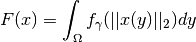
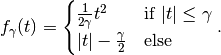

Huber¶
-
class
odl.solvers.functional.default_functionals.Huber(space, gamma)[source]¶ Bases:
odl.solvers.functional.functional.FunctionalThe Huber functional.
Notes
The Huber norm is the integral over a smoothed norm. In detail, it is given by

where :mth:`||\cdot||_2` denotes the Euclidean norm for vector-valued functions which reduces to the absolute value for scalar-valued functions. The function
 with smoothing
with smoothing  is given by
is given by
Attributes: adjointAdjoint of this operator (abstract).
convex_conjThe convex conjugate
domainSet of objects on which this operator can be evaluated.
gammaThe smoothing parameter of the Huber norm functional.
grad_lipschitzLipschitz constant for the gradient of the functional
gradientGradient operator of the functional.
inverseReturn the operator inverse.
is_functionalTrueif this operator’s range is aField.is_linearTrueif this operator is linear.proximalReturn the
proximal factoryof the functional.rangeSet in which the result of an evaluation of this operator lies.
Methods
_call(x)Return self(x).bregman(point[, subgrad])Return the Bregman distance functional. derivative(point)Return the derivative operator in the given point. norm([estimate])Return the operator norm of this operator. translated(shift)Return a translation of the functional. -
__init__(space, gamma)[source]¶ Initialize a new instance.
Parameters: - space :
FnBase Domain of the functional.
- gamma : float
Smoothing parameter of the Huber functional. If
gamma = 0, the functional is non-smooth and corresponds to the usual L1 norm. Forgamma > 0, it has a1/gamma-Lipschitz gradient so that its convex conjugate isgamma-strongly convex.
Examples
Example of initializing the Huber functional:
>>> space = odl.uniform_discr(0, 1, 14) >>> gamma = 0.1 >>> huber_norm = odl.solvers.Huber(space, gamma=0.1)
Check that if all elements are >
gammawe get the L1-norm up to a constant:>>> x = 2 * gamma * space.one() >>> tol = 1e-5 >>> constant = gamma / 2 * space.one().inner(space.one()) >>> f = odl.solvers.L1Norm(space) - constant >>> abs(huber_norm(x) - f(x)) < tol True
Check that if all elements are <
gammawe get the squared L2-norm times the weight1/(2*gamma):>>> x = gamma / 2 * space.one() >>> f = 1 / (2 * gamma) * odl.solvers.L2NormSquared(space) >>> abs(huber_norm(x) - f(x)) < tol True
Compare Huber- and L1-norm for vanishing smoothing
gamma=0:>>> x = odl.phantom.white_noise(space) >>> huber_norm = odl.solvers.Huber(space, gamma=0) >>> l1_norm = odl.solvers.L1Norm(space) >>> abs(huber_norm(x) - l1_norm(x)) < tol True
Redo previous example for a product space in two dimensions:
>>> domain = odl.uniform_discr([0, 0], [1, 1], [5, 5]) >>> space = odl.ProductSpace(domain, 2) >>> x = odl.phantom.white_noise(space) >>> huber_norm = odl.solvers.Huber(space, gamma=0) >>> l1_norm = odl.solvers.GroupL1Norm(space, 2) >>> abs(huber_norm(x) - l1_norm(x)) < tol True
- space :